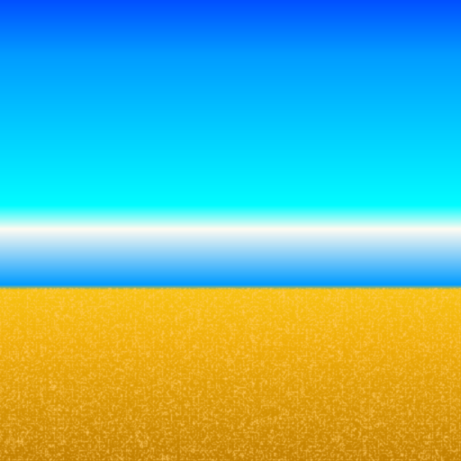
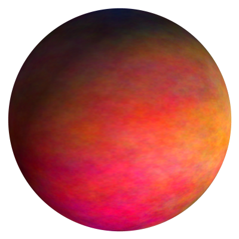
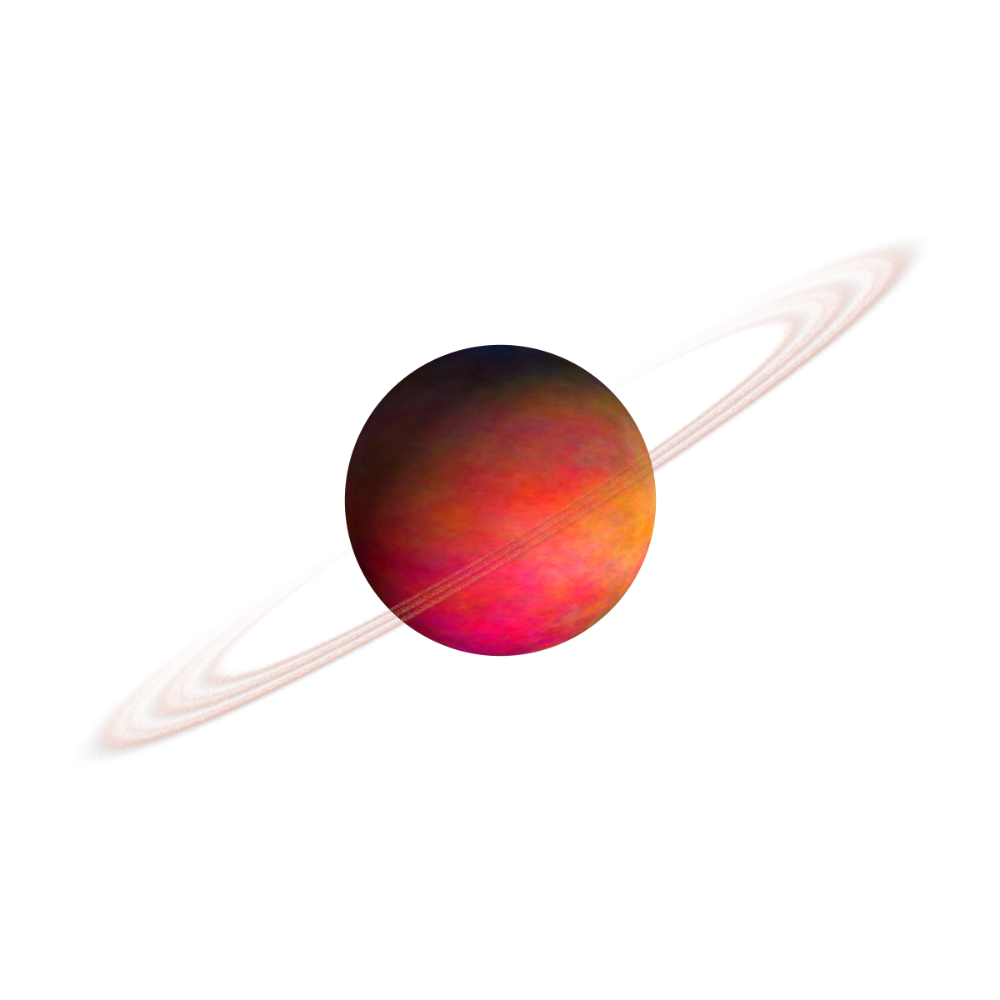
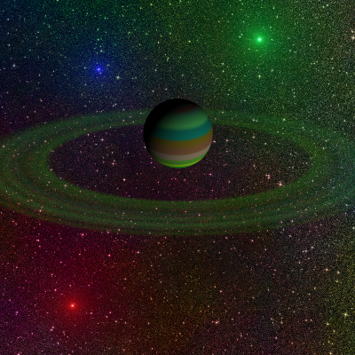
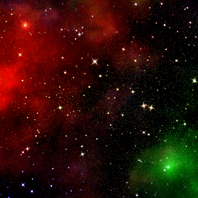
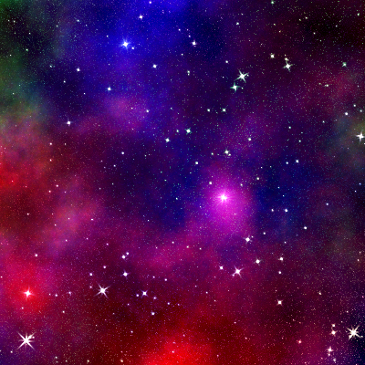

development <<< design
gimp draw gas planet |
gimp draw planetary rings |
gimp draw nebula star space |
inkscape
COLORS
online color converter
online color converter
#2790c4 rgb(39, 144, 196);
#e8e8e8 rgb(232, 232, 232);
#c1dde8 rgb(193, 221, 232);
#bae8c1 rgb(186, 232, 193);
#e6c4c4 rgb(230, 196, 196);
#ff0000 rgb(255, 0, 0);
#ff8000 rgb(255, 128, 0);
#ffff00 rgb(255, 255, 0);
#00ff00 rgb(0, 255, 0);
#00ffff rgb(0, 255, 255);
#0080ff rgb(0, 128, 255);
#ff00ff rgb(255, 0, 255);
#c8c8c8 rgb(200, 200, 200);

#0050ff rgb(0, 80, 255);
#009dff rgb(0, 157, 255);
#00ffff rgb(0, 255, 255);
#ffffff rgb(255, 255, 255);
#009dff rgb(0, 157, 255);
#f7c211 rgb(247, 194, 17);
#eead08 rgb(238, 173, 8);
#c18000 rgb(193, 128, 0);
+dotted sand
#ffca65 rgb(255, 202, 101);
INKSCAPE
- обязательно следить за масштабом документа при создании обычно 1 ... если масштаб маленький то фильтры гигантские пиксели показывают
- set file preference Shift+Ctrl+D ... unit px(grids, page), scale 1, set export... File - Export Png Image(Shift+Ctrl+E) ... unit px, save file
- переключать единицы измерения на пиксели ... сетка, страница, экспорт, а потом сохранять
- разрешение экспорта 96 dpi
- редактирование радиального градиента (или F2 черная стрелка выделить объект) при нажатии Ctrl+Shift+Leftmouse от центра в сторону, смещает центр градиента по цветам, но рычаги овала остаются на месте. В результате можно смещать и деформировать овал градиента + смещать центр радиальных цветов.
KRITA
Fx_blur_light - кисть фильтрующая - что то вроде размытия, настраивается
Fx_splat_starfield - кисть звездное небо, выглядит удобно
цветная размазывающая - Smudge_soft - инструмент палец, размазывать
GIMP
draw gas planet 3D looks
GIMP 2.10

-create document 400x400px
-create new layer "planet" and select it
-Filters - Render - Noise - Plasma...
--Random seed 3273878914
--Turbulence 1
--ok
-Filters - Map - Map Object...
--Preview
---Update preview live
--Options
---Map to: Sphere
---Transparent background
--Light
---Lightsource type: Directional light
---Direction Vector: 1 1 1
--Material
---Specular: 0
--Orientation
---Position Z: 0.9
--ok
draw planetary rings
GIMP 2.10


-imagine you have planet picture size 400x400px
-create layer rings size 1200x1200px and select it
-draw radial gradient from center to border
--gradient should be placed into user gradient path from Edit - Preferences - Folders - Gradients
-Filters - Noise - Spread...
--Horisontal: 35
--Vertical: 35
--ok
-perspective rings horisontal , increase bottom width line of rings, close to trapezoid shape. "Tools - Transform Tools - Perspective"
-scale rings vertical uses toolbox instrument "Scale Tool", hold "Ctrl" that lock center of scaling
-rotate ring around planet uses toolbox instrument "Rotate Tool"
-erase back pixels which insane cover the planet uses toolbox instrument "Eraser Tool", hold "Shift" that erase strait line
-colorize rings Colors - Colorize...
-duplicate "rings" layer rmouse - Duplicate layer, rename it to "mask", and select it
-switch foreground color to white
-switch gradient to "FG to Transparent"
-draw gradient from visual area of ring to shadowed(back side of planet)
-select layer "rings" and create mask for this layer rmouse - Add Layer Mask... Black(full transparency)
-select layer "mask" Edit - Copy
-select mask box of layer "rings" Edit - Paste
-hide "mask" layer (can be deleted for decrease file size)
drawing a starspace
GIMP 2.10


4000x2000 px can generate effects (sparkle, etc) few minutes.
example tested on 400x400px size image
final image will have 7 layers. Create layer step by step. Each new layer on top. Later layers will be reordered.
---------------------
"face stars" layer
(foreground white , background black)
- Tools - Paint Tools - Bucket Fill
-- BG color fill
-- fill black (which is background)
- Filters - Noise - CIE ich Noise...
-- Dulling 8
-- Lightness 100
-- Chroma 0
-- Hue 0
-- press "new seed" to looks good
-- ok
- Colors - Brightness-Contrast...
-- Contrast 63
-- Brightness -20...0...20 (number of stars)
-- ok
- Filters - Light and Shadow - Sparkle...
-- luminosity threshold 0.001
-- Flare intensity 1.0
-- Spike length 10
-- Spike points 4
-- Spike angle -1
-- Spike density 1
-- Transparency 0
-- Random hue 0
-- Random saturation 0
-- Foreground color (white)
-- ok
-----------------------
"back stars" layer
(foreground white , background black)
- Tools - Paint Tools - Bucket Fill
-- BG color fill
-- fill black (which is background)
- Filters - Noise - CIE ich Noise...
-- Dulling 8
-- Lightness 75
-- Chroma 0
-- Hue 0
-- press "new seed" to looks good
-- ok
- Filters - Light and Shadow - Sparkle...
-- luminosity threshold 0.006
-- Flare intensity 0.5
-- Spike length 10
-- Spike points 4
-- Spike angle -1
-- Spike density 1
-- Transparency 0
-- Random hue 0
-- Random saturation 0
-- Foreground color (white)
-- ok
--------------------------
"color plasma" layer
- Filters - Render - Noise - Plasma...
-- New Seed ... to looks good
-- ok
-------------------------
"black" layer
(foreground white , background black)
- Tools - Paint Tools - Bucket Fill
-- BG color fill
-- fill black (which is background)
------------------
"nebula plasma" layer
- Filters - Render - Noise - Plasma...
-- Turbulence 0.5
-- New Seed ... to looks good
-- ok
--------------------
"nebula noise" layer
- Filters - Render - Noise - Solid Noise...
-- X Size 4
-- Y Size 4
-- Detail 15
-- ok
-----------------------
"supernova" layer (transparent)
- Filters - Light and Shadow - Supernova...
-- Radius 3...4
-- Number of spokes 100
-- Random hue 0
-- color similar to highlighted area
-- color alpha 0
(use it after arrangement and addition of effects to all other layers(next step), that highlights any areas uses similar
color with alpha 0. That decrease light - decrease the rgb component)
-- ok
--------------------------
Arrange the layers in the following order from top to bottom:
- 1 color plasma
- 2 face stars
- 3 back stars
- 4 supernova
- 5 nebula noise
- 6 nebula plasma
- 7 black
---------------------------
configure view mode for layers:
- color plasma - Mode Overlay
- face stars - Mode Addition
- back stars - Mode Addition
- supernova - Mode Normal
- nebula noise - Mode Linear burn
- nebula plasma - Mode Normal
- black - Mode Normal
done ... now you can use File - Export As... to export result to PNG image
----------------------------------
after Brightness and Contrast the sparkle - Flare Intensity and other parameters change the result different than before
фильтры - свет и тени - Xach эффект
буквы на пустом делает прозрачными и с тенью, потом только оригинал удалить и все
some interesting patterns:
-Filters - Render - Clouds - Plasma - seed=3431924410 (фильтры - визуализация - облака - плазма - зерно=3431924410)
-Filters - Render - Pattern - Sinus - x=15 y=15 c=1 seed=2799433581 Distorted (фильтры - визуализация - текстура - синус - x=15 y=15 c=1 зерно=2799433581 искаженный)
GIMP 2.10 gmic portal effects:
-render - lightning
-pattern - satin
BUTTONS 1280 720
кнопки лучше делать квадратными не меньше 120 120
80 пикселей удобно, кратно 16 к 9 . значит кнопки 80 80 или 160 160
радиус скругления угла кнопки 1/5 короткой стороны